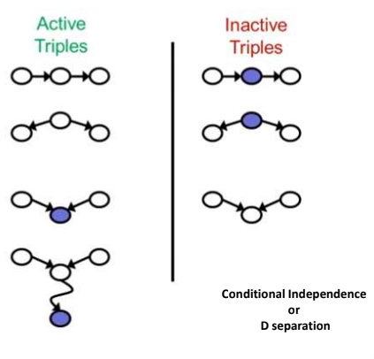

Picking Variables
Picking Probabilities
When we model a domain, there are many possible ways to describe the relevant entities and their attributes.
Choosing which random variables to use in the model is often one of the hardest tasks, and this decision has implications throughout the model. A common problem is using ill-defined variables.
For example, deciding to include the variable Fever to describe a patient in a medical domain seems fairly harmless.
Ex:
1. The time of admission to the hospital
2. To occurrence of a fever over a prolonged period? Clearly, each of these might be a reasonable attribute to model, but the interaction of Fever with other variables depends on the specific interpretation we use.
One of the most challenging tasks in constructing a network manually is to obtain probabilities from
people. This task is somewhat easier in the context of causal models, since the parameters tend to be natural and more interpretable.
Nevertheless, people generally dislike committing to an exact estimate of probability.
One approach is to obtain estimates qualitatively, using abstract terms such as “common,” “rare,” and “surprising,” and then assign these to numbers using a predefined scale.
This approach is fairly crude, and often can lead to misinterpretation. There are several approaches developed for assisting in obtaining probabilities from people. For example, one can visualize the probability of the event as an area (slice of a pie) or ask people how they would compare the probability in question to certain predefined lotteries. Nevertheless, probability obtaining is a long, difficult process, and one whose outcomes are not always reliable. The obtaining method can often influence the results and asking the same question using different phrasing can often lead to significant differences in the answer.
For example, studies show that people’s estimates for an event such as “Death by disease” are
significantly lower than their estimates for this event when it is broken down into different possibilities
such as “Death from cancer,” “Death from heart disease,” and so on.
D-Separation
In this section we explain the ideas that underlie the definition of d-separation. If you want to go to the section in which we give a formal definition of d-separation,
click here
Although there are many ways to understand d-separation, we prefer using the ideas of active path and active vertex on a path (see the
active path applet).
Recall the motivation for d-separation. The "d" in d-separation and d-connection stands for dependence. Thus if two variables are d-separated relative to a set of variables Z in a directed graph, then they are independent conditional on Z in all probability distributions such a graph can represent. Roughly, two variables X and Y are independent conditional on Z if knowledge about X gives you no extra information about Y once you have knowledge of Z. In other words, once you know Z, X adds nothing to what you know about Y.
Intuitively, a path is active if it carries information, or dependence. Two variables X and Y might be connected by lots of paths in a graph, where all, some, or none of the paths are active. X and Y are d-connected, however, if there is any active path between them. So X and Y are d-separated if all the paths that connect them are inactive, or, equivalently, if no path between them is active.
So now we need to focus on what makes a path active or inactive. A path is active when every vertex on the path is active. Paths, and vertices on these paths, are active or inactive relative to a set of other vertices Z. First let's examine when things are active or inactive relative to an empty Z. To make matters concrete, consider all of the possible undirected paths between a pair of variables A and B that go through a third variable C:
1) A --> C --> B
2) A <-- C <-- B
3) A <-- C --> B
4) A --> C <-- B
The first is a directed path from A to B through C, the second a directed path from B to A through C, and the third a pair of directed paths from C to A and from C to B. If we interpret these paths causally, in the first case A is an indirect cause of B, in the second B is an indirect cause of A, and in the third C is a common cause of A and B. All three of these causal situations give rise to association, or dependence, between A and B, and all three of these undirected paths are active in the theory of d-separation. If we interpret the fourth case causally, then A and B have a common effect in C, but no causal connection between them. In the theory of d-separation, the fourth path is inactive. Thus, when the conditioning set is empty, only paths that correspond to causal connection are active.
Cases of D-Separation
The concept of d-separation covers these three described cases. Basically, two sets of nodes are said to be d-separated from each other if there are no open information
(blocks paths) paths between them.
The concept of d-separation covers these three described cases. Basically, two sets of nodes are said to be d-separated from each other if there are no open information
(blocks paths) paths between them.
D-separation is very useful because it allows us to drop non-existent dependencies from the posterior
distribution. And this can greatly simplify the final expression.
Active Triple:
1. Causal Chain: ABC and B is
unobserved to either direction
2. Common Causes: ABC where B
is unobserved
3. Common Effect: ABC where B
or one of its descendants is
observed
